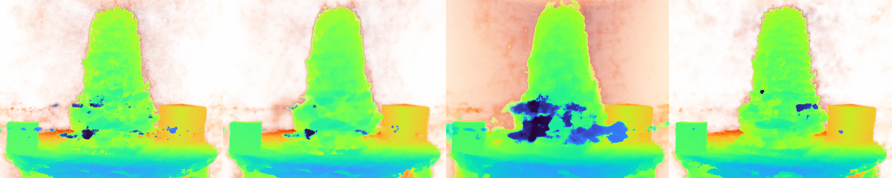
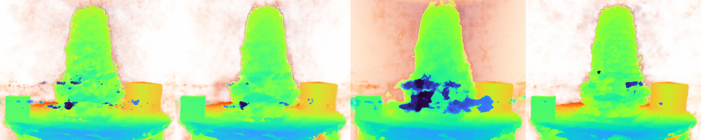

Different camera imaging sensors have different spectral responses which produce unique image qualities. Similarly, filters are often used by photographers to achieve different artistic effects. From a hyperspectral image, we theoretically have enough information to reconstruct what the image would look like if it were taken with a different camera sensor or filter.
We demonstrate results using the following procedure:
- Construct a hyperspectral NeRF using HS-NeRF
- Take a single photo with the target camera
- Localize the target photo's camera pose in the NeRF scene
- Render a hyperspectral image for that camera pose
- Run a least-squares optimization to find spectral response functions which result in a simulated photo that best matches the target photo
- Render the simulated photo
For each scene, we present simulated photos for an iPhone photo with various digital filters applied.
A number of different
target photos (left of each pair) can be
simulated by HS-NeRF (right of each pair) with excellent agreement.
Note that the agreement often appears so good/consistent that it seems as though a filter was applied to both target and simulation together, but the filters were only applied to the target photos, then the simulations were generated according to the above procedure.


 
